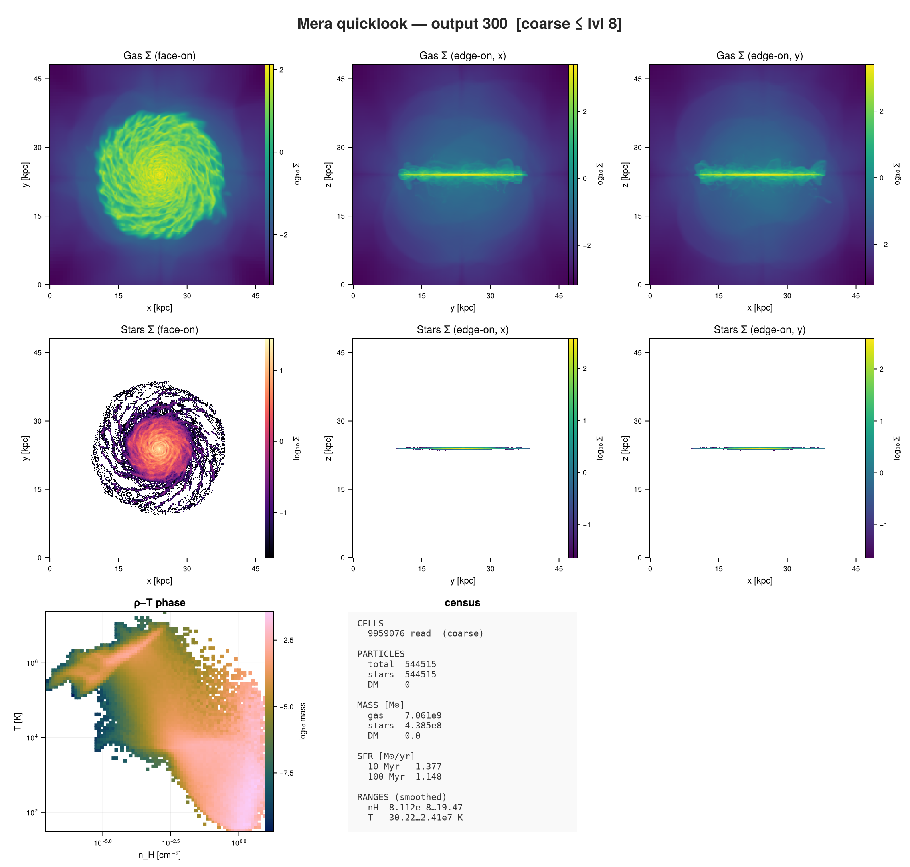

<!– GENERATED FILE. Do not edit this markdown. Source notebook: firstlook.ipynb Regenerate with: MERADIR=<repo checkout> ./render_docs.sh Any edit here is lost the next time the docs are rendered. –>
First Look: quicklook and report
This page is also an executable Jupyter notebook — open / download first_look.ipynb. The notebooks run end-to-end and double as part of Mera's test suite.
You have a simulation output and no idea what is in it. This page is about the first two minutes.
Mera has two entry points for that, and the difference between them is the first thing to get straight:
quicklook | report | |
|---|---|---|
| what it is | one fixed dashboard | a set of cards you choose |
| how you call it | one function, a few switches | build a plan, then run it |
| what you get | Σ maps, a ρ-T phase diagram, a census | whatever cards you put in the plan |
| cost control | budget, lmax, datatypes | a cost model: estimate, preview, downsample |
| use it when | you do not yet know what you are looking at | you know what you want to see |
Start with quicklook. Move to report when you find yourself wanting a panel it does not have.
Everything below runs on a real Milky-Way-like RAMSES run: 640 CPU domains, 2569 files, 5.7 GB on disk. That matters, because the honest answer to "how long does a first look take" depends almost entirely on how many files there are.
Setup
Point MERA_EXAMPLES at your own simulation folder, or edit the path below.
using Mera
MERA_EXAMPLES = get(ENV, "MERA_EXAMPLES", "/Volumes/FASTStorage/Simulations/Mera-Tests")
path = "$MERA_EXAMPLES/RAMSES/mw_L10"
output = 300;*__ __ _______ ______ _______
| |_| | | _ | | _ |
| | ___| | || | |_| |
| | |___| |_||_| |
| | ___| __ | |
| ||_|| | |___| | | | _ |
|_| |_|_______|___| |_|__| |__|
Mera v1.8.0 | Julia 1.12.7 | 4 threadsStep 1: what you get for free
read=false reads only the header. No cell is touched, no particle is read, and it returns immediately whatever the size of the run. This is the cheapest thing Mera can tell you, and it is often enough to decide what to do next.
q0 = quicklook(output; path=path, read=false);┌─ Mera quicklook ── output 300 (RAMSES) ───────────────
│ box : 48.0 kpc levels 6–10 (finest 46.88 pc)
│ grid : ndim 3 · ncpu 640 · nvarh 7
│ time : 445.9 Myr (non-cosmological)
│ particles : 544515 total — stars 544515 · DM 0
│ (header only — call quicklook(output) to read a sample)
└─ 0.12 s ──────────────────────────────────Note what is already known: the box size, the AMR level range and therefore the finest cell, the time or redshift, the number of CPU domains, and the particle census by family. The cell count is not there, because RAMSES does not record a leaf-cell total in the header; grid_info.ngrid_current is not it. Cells are reported only after a read.
The ncpu line is the number to look at before a big read. It is the count of per-CPU files Mera will have to open, and on large runs it dominates everything else.
Step 2: the actual first look
Now the real call. On a run this size it is not instant, so Mera says what it is doing:
- a timestamped line before each read, naming the file count and the level range
- the reader's own progress bar, with a file rate and an ETA
- a line before the projections
- the dashboard, with the elapsed time in its footer
- a closing timestamp
If your terminal is silent, the call is not running.
q = quicklook(output; path=path);[Mera]: quicklook output 300, reading gas: 2026-08-28T12:57:22.264
640 CPU file(s), levels 6-8 of 10 (budgeted to ~2000000 cells)
Processing files: 100%|██████████████████████████████████████████████████| Time: 0:00:03 ( 5.32 ms/it)
✓ File processing complete! Combining results...
projecting 3 gas map(s) [z, x, y] and the phase diagram from 9959076 cells
[Mera]: quicklook output 300, reading particles: 2026-08-28T12:57:34.918
┌─ Mera quicklook ── output 300 (RAMSES) ───────────────
│ box : 48.0 kpc levels 6–10 (finest 46.88 pc)
│ grid : ndim 3 · ncpu 640 · nvarh 7
│ time : 445.9 Myr (non-cosmological)
│ particles : 544515 total — stars 544515 · DM 0
│ read : 9959076 cells ⚠ coarse levels ≤ 8 of 10
│ gas mass : 7.061e9 M⊙ (mass-conserving)
│ nH range : 8.112e-8 … 19.47 cm⁻³ ⚠ peaks smoothed (lower bound)
│ T range : 30.22 … 2.41e7 K ⚠ peaks smoothed (lower bound)
│ star mass : 4.385e8 M⊙ DM mass : 0.0 M⊙
│ current SFR: 1.377 (10 Myr) · 1.148 (100 Myr) M⊙/yr
└─ 18.81 s ──────────────────────────────────
[Mera]: quicklook output 300 finished: 2026-08-28T12:57:41.071What came back
The printed dashboard is a side effect. The return value is a normal Julia object you can compute with.
propertynames(q)(:info, :levelmin, :levelmax, :lmax_used, :ncells, :sampled, :maps, :phase, :budget, :summary)# the header facts and the read-derived estimates
q.summary(output = 300, simcode = "RAMSES", box_kpc = 48.00000000003111, levelmin = 6, levelmax = 10, finest_cell_pc = 46.87500000003038, ncpu = 640, ndim = 3, nvarh = 7, time_Myr = 445.8861174695, redshift = nothing, npart = 544515, nstars = 544515, ndm = 0, nsinks = 0, ncells = 9959076, lmax_used = 8, sampled = true, gas_mass_Msol = 7.060719565110762e9, particle_subsample = 1.0, stellar_mass_Msol = 4.38466e8, dm_mass_Msol = 0.0, sfr10 = 1.377, sfr100 = 1.14778, nH_range = (8.111842617338044e-8, 19.474166141696692), T_range_K = (30.216649542865262, 2.4096147641221385e7), bmag_range_muG = nothing, beta_range = nothing, seconds = 18.793329000473022)# each map is a full projection result, not just a matrix
keys(q.maps)(:z, :x, :y, :stars, :stars_x, :stars_y)# the global snapshot budget: masses and the current star-formation rate
q.budget(gas_mass_Msol = 7.060719565110762e9, stellar_mass_Msol = 4.38466e8, dm_mass_Msol = 0.0, n_stars = 544515, n_dm = 0, sfr10 = 1.377, sfr100 = 1.14778, sfr_mean = 0.986498525911278, has_particles = true)Plotting it
quicklookplot renders the whole dashboard. It lives in a package extension, so it becomes available once a Makie backend is loaded.
using CairoMakie
quicklookplot(q)
Step 3: choosing what to read
Three switches control what the call costs. They do not all work the same way, and the difference matters on a run with thousands of files.
datatypes: which components
[:hydro] skips the particle read entirely; [:stars] or [:dm] skip the gas read. On a run where one of the two dominates, this is the cheapest saving available.
q_gas = quicklook(output; path=path, datatypes=[:hydro], verbose=false)
keys(q_gas.maps)(:z, :x, :y)directions: which projection axes
:z is face-on for a disk in the xy-plane; :x and :y are the two edge-on views. It applies to the gas maps and to the stellar and dark-matter maps alike.
The face-on map keeps the plain key, and edge-on views arrive as stars_x / stars_y (and dm_x / dm_y), so a call asking for two axes of stars returns two stellar maps:
q_stars = quicklook(output; path=path, datatypes=[:stars], directions=[:z, :x], verbose=false)
keys(q_stars.maps)(:stars, :stars_x)budget and lmax: how much of the AMR hierarchy
budget is a target leaf-cell count. If reading every level would exceed it, Mera reads only the coarse levels, and says so in the dashboard. lmax sets that level directly.
Coarsening is volume-conserving, so extensive totals stay exact: the gas mass from a budgeted read is the same number you would get from the full one. Peak quantities are not: the densest and hottest gas lives in the finest cells, so nH and T extrema from a coarse read are lower bounds. The dashboard marks them when that is the case.
q_coarse = quicklook(output; path=path, lmax=8, datatypes=[:hydro], verbose=false)
(cells = q_coarse.ncells, level = q_coarse.lmax_used, gas_mass = q_coarse.budget.gas_mass_Msol)(cells = 9959076, level = 8, gas_mass = 7.060719565110762e9)Gas and particles are read differently
budget caps the gas read only. Particles are read in full by default, because a particle file is small next to the AMR hydro, and that is deliberate: it keeps the stellar and dark-matter masses and the SFR exact even when the gas read is coarse.
For runs where reading every particle is itself the cost, particle_subsample reads only that fraction of the particle CPU files, skipping whole files, which cuts I/O and peak memory together. RAMSES load-balances its domains to roughly equal particle counts, so this reads about that fraction of the particles; the census, masses and SFR are then scaled by 1/fraction and flagged as approximate. The same subsample keyword exists on getparticles.
q_sub = quicklook(output; path=path, datatypes=[:stars], particle_subsample=0.25, verbose=false)
q_sub.budget(gas_mass_Msol = nothing, stellar_mass_Msol = 4.7834e8, dm_mass_Msol = 0.0, n_stars = 594020, n_dm = 0, sfr10 = 1.4944, sfr100 = 1.259296, sfr_mean = 1.0782870241030595, has_particles = true)How far to trust a coarse read
The distinction that matters is extensive totals versus peaks, and it is easy to check rather than take on trust. Reading the same output at three levels:
using Printf
info = getinfo(output, path, verbose=false) # header only; the reads happen in the loop
ref = nothing
for l in (8, 7, 6)
g = gethydro(info, lmax=l, verbose=false, show_progress=false)
m = sum(getvar(g, :mass, :Msol))
nh = maximum(getvar(g, :rho, :nH))
T = maximum(getvar(g, :T, :K))
global ref = ref === nothing ? (m, nh, T) : ref
@printf("level %d: %9d cells gas mass %.6e Msol (%+.4f%%) nH max %7.3f (%+.1f%%) T max %.3e (%+.1f%%)\n",
l, length(g.data), m, 100*(m-ref[1])/ref[1], nh, 100*(nh-ref[2])/ref[2], T, 100*(T-ref[3])/ref[3])
g = nothing; GC.gc()
endlevel 8: 9959076 cells gas mass 7.060720e+09 Msol (+0.0000%) nH max 19.474 (+0.0%) T max 2.410e+07 (+0.0%)
level 7: 1631176 cells gas mass 7.060720e+09 Msol (+0.0000%) nH max 8.024 (-58.8%) T max 9.283e+06 (-61.5%)
level 6: 262144 cells gas mass 7.060720e+09 Msol (+0.0000%) nH max 2.804 (-85.6%) T max 7.540e+06 (-68.7%)Read that table as two different stories.
Gas mass does not move. Not approximately: the error is zero to every digit printed, at every level. De-refinement is mass- and volume-conserving, so an extensive total is the same number whether you read two hundred thousand cells or ten million. The same holds for any sum over cells.
The peaks collapse. The densest and hottest gas lives in the finest cells, and coarsening averages it away. One level down already loses most of the density peak, and further down it is gone by an order of magnitude. So nH and T extrema from a budgeted read are lower bounds, not estimates. Read at full resolution when you need the true extremes.
Particle quantities behave like the mass rather than like the peaks, because particles are read in full. They only become approximate under particle_subsample, and then by roughly the sampling noise: the quarter-sample above estimated the star count about 9% high.
The dashboard marks all of this: the read is flagged coarse, the gas mass is labelled mass-conserving, and the ranges say peaks smoothed. Each printed number carries how far to trust it, which is the point.
Step 4: the thing that actually costs time on a big run
Here is the part worth understanding before you wait ten minutes for something.
A budgeted read cuts how many cells come out of each file. It does not cut how many files get opened. Mera still walks every CPU domain, and on a run with thousands of them that fixed per-file cost is most of the wall clock.
What does cut the file count is a spatial range. RAMSES orders its domains along a Hilbert curve, so a sub-box maps to a contiguous set of CPU files and Mera opens only those. It reports how many it skipped:
📍 Spatial filtering active: 512 files skippedSo on a large run:
- want a cheaper overview: lower
budgetorlmax, same number of files, fewer cells each - want a cheaper region: give
xrange/yrange/zrange, fewer files opened
quicklook itself always looks at the whole box. When you want a region, that is a gethydro call with ranges, or a report plan.
A related question: can gas cells be subsampled the way particles can? Particles have a subsample keyword that skips whole CPU files, which is unbiased because RAMSES balances roughly equal particle counts per domain. Gas has no such switch, deliberately. Skipping files would make a map spatially incomplete, with holes where the skipped domains were. Coarsening the level instead keeps every part of the box and conserves mass. For gas, level is the right lever.
Step 5: when quicklook is not enough
quicklook is deliberately fixed. When you want a different set of panels, report lets you choose them, and it comes with a cost model.
plan = ReportPlan(output; path=path,
cards = [ProjectionCard(:hydro, :sd; unit=:Msol_pc2, direction=:z),
PhaseCard(:hydro, :rho, :T; weight=:mass, xunit=:nH, yunit=:K)])
preview(plan)┌─ Mera report PLAN ── output 300 (RAMSES) ── 2 cards ── (uncalibrated ±2×)
│ level 8 of 10 ⚠ APPROXIMATE (coarse, budget 2000000 cells) ~1.36e6 hydro cells
├─ card kind datatype cells est.t
│ hydro_sd_map map hydro 1.36e6 0.08 s
│ rho_T_phase phase hydro 1.36e6 0.01 s
├─ TOTAL read 4.02 s + compute 0.09 s = 4.1 s (uncalibrated ±2×)
└─ run: report(plan; output=:ascii|:jld2|:file [, budget_s=…]) ───────ReportPlan(300, "/Volumes/FASTStorage/Simulations/Mera-Tests/RAMSES/mw_L10", ReportCard[ProjectionCard(:hydro, :sd, :Msol_pc2, :mass, 256, :z, Any[:bc], :standard, "hydro_sd_map", nothing), PhaseCard(:hydro, :rho, :T, :mass, (80, 80), :log, :log, :nH, :K, "rho_T_phase")], -1, 2000000)preview prints what the plan will do and what it is expected to cost. The estimate comes from a model of the form
read_time ≈ β_open · ncpu + β_io · ncells · nvarsThe first term is the per-file cost, scaled by the number of CPU domains, which is why the estimate reacts to a run with thousands of files rather than only to its cell count.
Those coefficients start from defaults measured on another machine, so treat an uncalibrated estimate as within a factor of two. calibrate! runs one tiny report and fits them to your disk:
calibrate!(output; path=path)CostModel(0.005, 3.0e-7, 1.0e-6, 1.0e-8, 5.0e-9, 5.0e-8, 1.0e-6, Dict(:map => 17.474359254524796, :phase => 14.449460799902905, :read => 0.6681983411159792, :profile => 67.42888440515165, :scalar => 2.2694713264917), true)# same plan, now with coefficients measured on this machine
estimate(plan)(per_card = [("hydro_sd_map", :map, :hydro, 1.36352e6, 1.3834659914118335), ("rho_T_phase", :phase, :hydro, 1.36352e6, 0.10313447140538698)], read_s = 2.6848957728182095, compute_s = 1.4866004628172205, total_s = 4.17149623563543, level = 8, cells = 1363520, sampled = true, calibrated = true)If the estimate is larger than you want to wait, downsample reduces the plan to fit a target time, and tells you what it gave up.
downsample(plan, 20.0)ReportPlan(300, "/Volumes/FASTStorage/Simulations/Mera-Tests/RAMSES/mw_L10", ReportCard[ProjectionCard(:hydro, :sd, :Msol_pc2, :mass, 256, :z, Any[:bc], :standard, "hydro_sd_map", nothing), PhaseCard(:hydro, :rho, :T, :mass, (80, 80), :log, :log, :nH, :K, "rho_T_phase")], -1, 2000000)Which one do I want?
- Just tell me what this is →
quicklook(output; path=path) - Only the header, right now →
quicklook(output; path=path, read=false) - Only the gas, or only the stars →
datatypes=[:hydro]/[:stars] - Edge-on as well as face-on →
directions=[:z, :x] - It is too slow → lower
budgetorlmaxfor the whole box; use a spatial range for a region - I want specific panels →
reportwith a plan - How long will that take? →
calibrate!once, thenprevieworestimate
Next steps
- Hydro: First Inspection, the manual version of what
quicklookautomates - Bundling Arguments, for reusing the same window across calls
- Multi-Threading, since the reader threads over CPU files and this is where that pays off